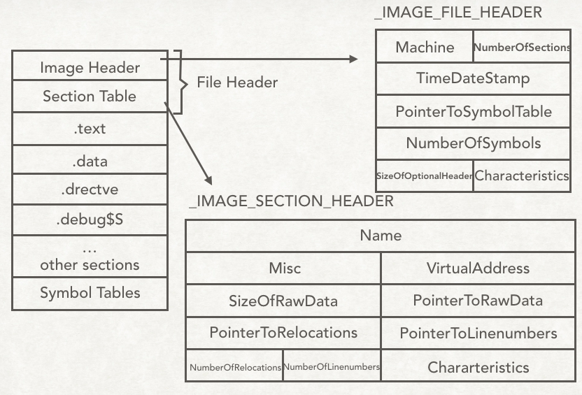
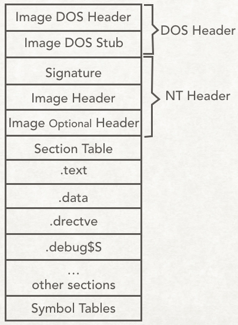

PREFACE
Windows下的可执行文件采用PE格式, 而编译器产生的目标文件仍为COFF格式. 由于PE是COFF的一种扩展, 它们在结构上很大程度相同. 很多时候我们可以将它们统称为PE/COFF文件.
COFF
COFF文件的文件头部(类比ELF Header)包括两部分, 一个是描述该文件总体结构和属性的映像头(Image Header), 另一个是描述该文件中包含的端属性的段表(Section Table).
下图定性的描述了COFF文件的大致结构.

1 2 3 4 5 6 7 8 9
| typedef struct _IMAGE_FILE_HEADER { WORD Machine; WORD NumberOfSections; DWORD TimeDateStamp; DWORD PointerToSymbolTable; DWORD NumberOfSymbols; WORD SizeOfOptionalHeader; WORD Characteristics; }IMAGE_FILE_HEADER, *PIMAGE_FILE_HEADER
|
Section Table
段表是一个类型为_IMAGE_SECTION_HEADER的数组, 数组的大小为COFF文件所包含的段的数量.
1 2 3 4 5 6 7 8 9 10 11 12 13 14 15 16
| typedef struct _IMAGE_SECTION_HEADER { BYTE name[IMAGE_SIZEOF_SHORT_NAME]; union { DWORD PhysicalAddress; DWORD VirtualSize; }Misc; DWORD VirtualAddress; DOWRD SizeOfRawData; DOWRD PointerToRawData; DWORD PointerToRelocations; DWORD PointerToLinenumbers; WORD NumberOfRelocations; WORD NumberOfLinenumbers; DWORD Characteristics; } IMAGE_SECTION_HEADER, *PIMAGE_SECTION_HEADER;
|
characteristics
1 2 3 4 5 6 7 8 9 10 11 12 13 14 15 16 17 18 19
| #define IMAGE_SCN_TYPE_NO_PAD 0x00000008 #define IMAGE_SCN_CNT_CODE 0x00000020 #define IMAGE_SCN_CNT_INITIALIZED_DATA 0x00000040 #define IMAGE_SCN_CNT_UNINITIALIZED_DATA 0x00000080 #define IMAGE_SCN_LNK_OTHER 0x00000100 #define IMAGE_SCN_LNK_INFO 0x00000200 #define IMAGE_SCN_LNK_REMOVE 0x00000800 ... #define IMAGE_SCN_LNK_NRELOC_OVFL 0x01000000 #define IMAGE_SCN_MEM_DISCARDABLE 0x02000000 #define IMAGE_SCN_MEM_NOT_CACHED 0x04000000 #define IMAGE_SCN_MEM_NOT_PAGED 0x08000000 #define IMAGE_SCN_MEM_SHARED 0x10000000 #define IMAGE_SCN_MEM_EXECUTE 0x20000000 #define IMAGE_SCN_MEM_READ 0x40000000 #define IMAGE_SCN_MEM_WRITE 0x80000000 #define IMAGE_SCN_SCALE_INDEX 0x00000001
|
Other
- .drectve段— 链接指示信息
- .debug段— 调试信息
- Symbol Table : 与ELF文件符号表基本相同, 主要有符号名/符号类型/所在位置等信息.
PE
PE文件是COFF文件的扩展, 相比COFF文件, PE文件多了以下几个结构(并不完整):
- 最头部添加DOS MZ可执行文件格式的文件头和桩代码
- IAMGE_FILE_HEADER 扩展成了IMAGE_NT_HEADER
PE文件的大致结构结构如下图:

1 2 3 4 5 6 7 8 9 10 11 12 13 14 15 16 17 18 19 20 21
| typedef struct _IMAGE_DOS_HEADER { WORD e_magic; WORD e_cblp; WORD e_cp; WORD e_crlc; WORD e_cparhdr; WORD e_minalloc; WORD e_maxalloc; WORD e_ss; WORD e_sp; WORD e_csum; WORD e_ip; WORD e_cs; WORD e_lfarlc; WORD e_ovno; WORD e_res[4]; WORD e_oemid; WORD e_oeminfo; WORD e_res2[10]; LONG e_lfanew; } IMAGE_DOS_HEADER,*PIMAGE_DOS_HEADER;
|
DOS Stub
这是一段能够在DOS下运行的代码, 这段代码的功能是输出This program cannot be run in DOS mode, 然后退出程序.
IMAGE_NT_HEADER是PE真正的文件头, 它包含一个PE签名和两个结构体— IMAGE_FILE_HEADER和IMAGE_OPTIONAL_HEADER. 其中的 IMAGE_FILE_HEADER和COFF文件中的相同. PE签名的值恒为PE\x00\x00.
1 2 3 4 5
| typedef struct _IMAGE_NT_HEADERS { DWORD Signature; IMAGE_FILE_HEADER FileHeader; IMAGE_OPTIONAL_HEADER32 OptionalHeader; } IMAGE_NT_HEADERS32,*PIMAGE_NT_HEADERS32;
|
1 2 3 4 5 6 7 8 9 10 11 12 13 14 15 16 17 18 19 20 21 22 23 24
| typedef struct _IMAGE_OPTIONAL_HEADER { WORD Magic; ... DWORD AddressOfEntryPoint; DWORD BaseOfCode; DWORD BaseOfData; DWORD ImageBase; DWORD SectionAlignment; DWORD FileAlignment; ... DWORD SizeOfImage; DWORD SizeOfHeaders; DWORD CheckSum; WORD Subsystem; ... DWORD NumberOfRvaAndSizes; IMAGE_DATA_DIRECTORY DataDirectory[IMAGE_NUMBEROF_DIRECTORY_ENTRIES]; } IMAGE_OPTIONAL_HEADER32,*PIMAGE_OPTIONAL_HEADER32;
|
1 2 3 4
| typedef struct _IMAGE_DATA_DIRECTORY { DWORD VirtualAddress; DWORD Size; } IMAGE_DATA_DIRECTORY,*PIMAGE_DATA_DIRECTORY;
|
1 2 3 4 5 6 7 8 9 10 11 12 13 14 15
| #define IMAGE_DIRECTORY_ENTRY_EXPORT 0 #define IMAGE_DIRECTORY_ENTRY_IMPORT 1 #define IMAGE_DIRECTORY_ENTRY_RESOURCE 2 #define IMAGE_DIRECTORY_ENTRY_EXCEPTION 3 #define IMAGE_DIRECTORY_ENTRY_SECURITY 4 #define IMAGE_DIRECTORY_ENTRY_BASERELOC 5 #define IMAGE_DIRECTORY_ENTRY_DEBUG 6 #define IMAGE_DIRECTORY_ENTRY_ARCHITECTURE 7 #define IMAGE_DIRECTORY_ENTRY_GLOBALPTR 8 #define IMAGE_DIRECTORY_ENTRY_TLS 9 #define IMAGE_DIRECTORY_ENTRY_LOAD_CONFIG 10 #define IMAGE_DIRECTORY_ENTRY_BOUND_IMPORT 11 #define IMAGE_DIRECTORY_ENTRY_IAT 12 #define IMAGE_DIRECTORY_ENTRY_DELAY_IMPORT 13 #define IMAGE_DIRECTORY_ENTRY_COM_DESCRIPTOR 14
|
REFRENCE